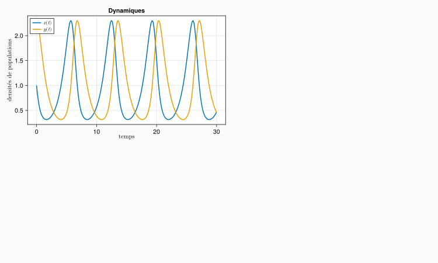

usingDifferentialEquations# conditions initialesx0 =1.0y0 =2.3etat0 = [x0, y0]# paramètresr =1.0c =1.0b =1.0m =1.0par_lovo = [r, c, b, m]# integration plus longuetspan = (0.0, 30.0)tstep =.01# définition du modèlefunctionlovo(u, par, t) r, c, b, m = par x = u[1] y = u[2] dx = r*x - c*x*y dy = b*x*y - m*y [dx, dy]end# problèmeprob_lovo =ODEProblem(lovo, etat0, tspan, par_lovo; saveat = tstep)# intégrationsol_lovo =solve(prob_lovo; reltol =1e-6)
L’objectif est de créer une figure avec trois panels. dans la colonne de gauche, le premier panel représentera la dynamique temporelle, le second le plan de phase, et dans la colonne de droite nous représenterons la figure 3D avec l’intégrale première.
usingCairoMakie# on crée la figure avec un fond gris clairfig =Figure( backgroundcolor =RGBf(0.98, 0.98, 0.98), size = (1000, 600),)# déclare les différents panels comme des éléments gridlayout contenant les plotspanela = fig[1, 1] =GridLayout()panelb = fig[2, 1] =GridLayout()panelc = fig[:, 2] =GridLayout()
On commence par remplir le premier panel avec les dynamiques :
ax1 =Axis( panela[1,1], ylabel = L"densités de populations$$",title="Dynamiques",)# pour avoir un xlabel plus proche de l'axe on le définit séparément en réglant manuellement l'espacement/paddingLabel(panela[1,1,Bottom()], L"temps$$"; padding=(0,0,0,20))# dynamiques de populationslines!(ax1, sol_lovo.t, sol_lovo[1,:]; linewidth =2, label = L"$x(t)$")lines!(ax1, sol_lovo.t, sol_lovo[2,:]; linewidth = 2, label = L"$y(t)$")# légende avec quelques ajustements d'espacement interneaxislegend(ax1; position =:lt, labelsize =12, padding = (5,5,0,0), rowgap =-5)fig

Puis on complète le second panel avec le plan de phase :
ax2 =Axis( panelb[1,1]; xlabel = L"population $x$",ylabel = L"population $y$", title ="Plan de phase", xticks = (0:.5:2), yticks = (0:.5:2),)# champs de vecteurscale =10xrange =range(0, 2.75, length=11)yrange =range(0, 2.75, length=11)derx = [lovo([x y], par_lovo, 0)[1]/scale for x in xrange, y in yrange]dery = [lovo([x y], par_lovo, 0)[2]/scale for x in xrange, y in yrange]arrows2d!( ax2, xrange, yrange, derx, dery; color =:lightgray, tipwidth =8, shaftwidth =1, )# nullclineslines!( ax2, xrange, [r/c for x in xrange]; color =Cycled(2), linewidth =2, label = L"$\dot{x}$ nullcline", )lines!(ax2, [0 for y in yrange], yrange; linewidth =2, color =Cycled(2))lines!( ax2, [m/b for y in yrange], yrange; color =Cycled(3), linewidth =2, label = L"$\dot{y}$ nullcline",)lines!(ax2, xrange, [0 for y in yrange]; color =Cycled(3), linewidth =2)# équilibresscatter!(ax2, Point2f(0,0); color =Cycled(4))scatter!(ax2, Point2f(m/b, r/c); color =Cycled(4))# trajectoirelines!(ax2, sol_lovo[1, :], sol_lovo[2, :], color =Cycled(1), linewidth =2)xlims!(ax2, -0.1, 2.75)ylims!(ax2, -0.1, 2.75)axislegend(ax2; position =:rt, labelsize =12, padding = (5,5,0,0), rowgap =-5)save("LV_makieplot.png", fig)
Finalement on complète le troisième panel avec la représentation 3D, en commencant par redéfinir l’intégrale première
# l'intégrale premièrefunctionint_prem(x, y, par = par_lovo) r, c, b, m = parreturn-r*log(y) + c*y -m*log(x) + b*xend
# système d'axe 3D en première colonne de panel c, avec réglage de la caméraax3 =Axis3( panelc[1, 1]; title ="Intégrale première", titlegap =-50, xlabel = L"population $x$",ylabel = L"population $y$", zlabel = L"$H(x,y)$",azimuth = 0.5, elevation =0.2,)# grille x, yxsurf =0.2:0.1:3.0ysurf =0.2:0.1:3.0# calcul de la surface via une compréhension de listehsurf = [int_prem(x, y, par_lovo) for x in xsurf, y in ysurf]hplane = [int_prem(x0, y0, par_lovo) for x in xsurf, y in ysurf]# tracé de H(x,y) et du plan z = H(x0,y0)hs =surface!(ax3, xsurf, ysurf, hsurf; alpha=.5)surface!(ax3, xsurf, ysurf, hplane; color =fill(:red, 100, 100), alpha =.3)# ajout de la trajectoire simuléelines!( ax3, sol_lovo[1,:], sol_lovo[2,:], [int_prem(x0, y0, par_lovo) for x in sol_lovo[1,:]]; color =Cycled(4), linewidth =3,)# ajout d'une colorbar reprise sur le plot de H(x,y) avec une hauteur relative sur la colonne# la colorbar est en 2e colonne du panelcColorbar(panelc[1, 2], hs, height =Relative(.55))# colonne 2 plus largecolsize!(fig.layout, 2, Auto(1.5))# modification des espacements entre lignes et colonnescolgap!(fig.layout, 60)colgap!(panelc, -10)rowgap!(fig.layout, 10)# titre général en ligne 0supertitle =Label(fig[0, :], "Modèle de Lotka Volterra", fontsize =30)save("LV_makieplot_full.png", fig)
Figure 1
Figure 2: Une jolie figure pour le modèle de Lotka Volterra
---title: "Lotka Volterra avec `Makie.jl`"engine: julia---<!-- load local julia environment (freeze package versions) -->```{julia}#| include: false#| eval: true## to share the environment, copy Project.toml and Manifest.toml files in some directory# `activate` the local environment# if necessary `instantiate` to get the correct package versions## to check if some PackageName.jl is used from the local environment## Pkg.status("PackageName")using PkgPkg.activate(".")```L'objectif ici est de faire une jolie représentation graphique du modèle de Lotka Volterra avec la librairie graphique `Makie.jl`.On reprend une partie du code de la page sur les [populations en intéractions](pop_interactions.qmd).```{julia}#| code-fold: trueusing DifferentialEquations# conditions initialesx0 = 1.0y0 = 2.3etat0 = [x0, y0]# paramètresr = 1.0c = 1.0b = 1.0m = 1.0par_lovo = [r, c, b, m]# integration plus longuetspan = (0.0, 30.0)tstep = .01# définition du modèlefunction lovo(u, par, t) r, c, b, m = par x = u[1] y = u[2] dx = r*x - c*x*y dy = b*x*y - m*y [dx, dy]end# problèmeprob_lovo = ODEProblem(lovo, etat0, tspan, par_lovo; saveat = tstep)# intégrationsol_lovo = solve(prob_lovo; reltol = 1e-6)```L'objectif est de créer une figure avec trois panels. dans la colonne de gauche, le premier panel représentera la dynamique temporelle, le second le plan de phase, et dans la colonne de droite nous représenterons la figure 3D avec l'intégrale première.```{julia}using CairoMakie# on crée la figure avec un fond gris clairfig = Figure( backgroundcolor = RGBf(0.98, 0.98, 0.98), size = (1000, 600),)# déclare les différents panels comme des éléments gridlayout contenant les plotspanela = fig[1, 1] = GridLayout()panelb = fig[2, 1] = GridLayout()panelc = fig[:, 2] = GridLayout()```On commence par remplir le premier panel avec les dynamiques :```{julia}#| output: trueax1 = Axis( panela[1,1], ylabel = L"densités de populations$$", title="Dynamiques",)# pour avoir un xlabel plus proche de l'axe on le définit séparément en réglant manuellement l'espacement/paddingLabel(panela[1,1,Bottom()], L"temps$$"; padding=(0,0,0,20))# dynamiques de populationslines!(ax1, sol_lovo.t, sol_lovo[1,:]; linewidth = 2, label = L"$x(t)$")lines!(ax1, sol_lovo.t, sol_lovo[2,:]; linewidth = 2, label = L"$y(t)$")# légende avec quelques ajustements d'espacement interneaxislegend(ax1; position = :lt, labelsize = 12, padding = (5,5,0,0), rowgap = -5)fig```Puis on complète le second panel avec le plan de phase :```{julia}#| output: trueax2 = Axis( panelb[1,1]; xlabel = L"population $x$", ylabel = L"population $y$", title = "Plan de phase", xticks = (0:.5:2), yticks = (0:.5:2),)# champs de vecteurscale = 10xrange = range(0, 2.75, length=11)yrange = range(0, 2.75, length=11)derx = [lovo([x y], par_lovo, 0)[1]/scale for x in xrange, y in yrange]dery = [lovo([x y], par_lovo, 0)[2]/scale for x in xrange, y in yrange]arrows2d!( ax2, xrange, yrange, derx, dery; color = :lightgray, tipwidth = 8, shaftwidth = 1, )# nullclineslines!( ax2, xrange, [r/c for x in xrange]; color = Cycled(2), linewidth = 2, label = L"$\dot{x}$ nullcline", )lines!(ax2, [0 for y in yrange], yrange; linewidth = 2, color = Cycled(2))lines!( ax2, [m/b for y in yrange], yrange; color = Cycled(3), linewidth = 2, label = L"$\dot{y}$ nullcline",)lines!(ax2, xrange, [0 for y in yrange]; color = Cycled(3), linewidth = 2)# équilibresscatter!(ax2, Point2f(0,0); color = Cycled(4))scatter!(ax2, Point2f(m/b, r/c); color = Cycled(4))# trajectoirelines!(ax2, sol_lovo[1, :], sol_lovo[2, :], color = Cycled(1), linewidth = 2)xlims!(ax2, -0.1, 2.75)ylims!(ax2, -0.1, 2.75)axislegend(ax2; position = :rt, labelsize = 12, padding = (5,5,0,0), rowgap = -5)save("LV_makieplot.png", fig)```{}Finalement on complète le troisième panel avec la représentation 3D, en commencant par redéfinir l'intégrale première```{julia}# l'intégrale premièrefunction int_prem(x, y, par = par_lovo) r, c, b, m = par return -r*log(y) + c*y - m*log(x) + b*xend``````{julia}#| output: true#| label: fig-LV-complex#| fig-cap: Figure illustrant le comportement du modèle de Lotka Volterra# système d'axe 3D en première colonne de panel c, avec réglage de la caméraax3 = Axis3( panelc[1, 1]; title = "Intégrale première", titlegap = -50, xlabel = L"population $x$", ylabel = L"population $y$", zlabel = L"$H(x,y)$", azimuth = 0.5, elevation = 0.2,)# grille x, yxsurf = 0.2:0.1:3.0ysurf = 0.2:0.1:3.0# calcul de la surface via une compréhension de listehsurf = [int_prem(x, y, par_lovo) for x in xsurf, y in ysurf]hplane = [int_prem(x0, y0, par_lovo) for x in xsurf, y in ysurf]# tracé de H(x,y) et du plan z = H(x0,y0)hs = surface!(ax3, xsurf, ysurf, hsurf; alpha=.5)surface!(ax3, xsurf, ysurf, hplane; color = fill(:red, 100, 100), alpha = .3)# ajout de la trajectoire simuléelines!( ax3, sol_lovo[1,:], sol_lovo[2,:], [int_prem(x0, y0, par_lovo) for x in sol_lovo[1,:]]; color = Cycled(4), linewidth = 3,)# ajout d'une colorbar reprise sur le plot de H(x,y) avec une hauteur relative sur la colonne# la colorbar est en 2e colonne du panelcColorbar(panelc[1, 2], hs, height = Relative(.55))# colonne 2 plus largecolsize!(fig.layout, 2, Auto(1.5))# modification des espacements entre lignes et colonnescolgap!(fig.layout, 60)colgap!(panelc, -10)rowgap!(fig.layout, 10)# titre général en ligne 0supertitle = Label(fig[0, :], "Modèle de Lotka Volterra", fontsize = 30)save("LV_makieplot_full.png", fig)```{#fig-LV_makieplot}et voilà !